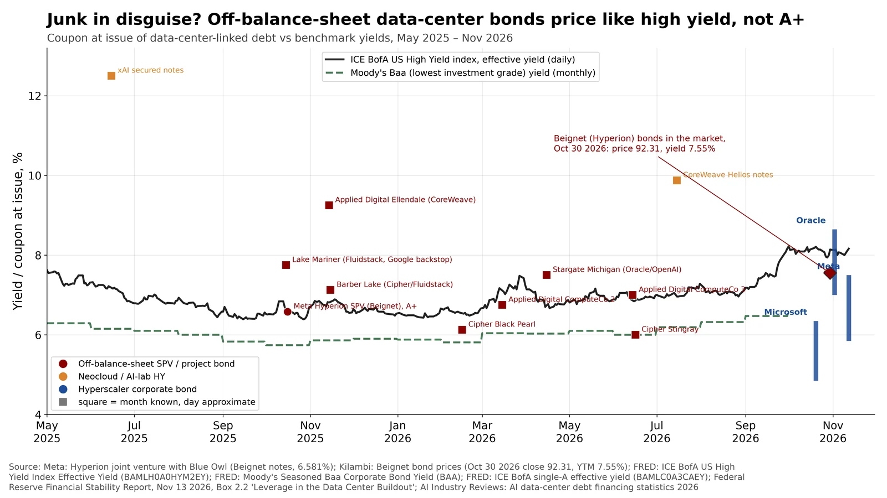

Q11. Junk Thesis

Thesis test: coupons at issue on 14 data-center-linked financings, May 2025 – November 2026, against the ICE BofA US High Yield index effective yield (black) and Moody's Baa yield (green dashed). Evidence FOR the thesis: Meta's Hyperion SPV bond (Beignet), rated A+ by S&P and kept off Meta's balance sheet, priced at 6.581% on Oct 16 2025, when the whole junk-bond index yielded 6.58% and Baa bonds 5.74%; by Oct 30 2026 it traded at 92.31 to yield 7.55%, closer to the high-yield index (7.99% on Oct 29) than to single-A bonds (5.63%). Six of the nine SPV/project bonds (red) were priced at or above the junk index on their issue dates, and all nine above the Baa yield, and the Fed's November Financial Stability Report says the subordinated tranches of such vehicles are held by high-yield funds, life insurers and BDCs. Evidence AGAINST: Microsoft and Meta still borrow on their own balance sheets well inside high yield, several 2026 SPV deals (Cipher 6.0–6.125%, Applied Digital 6.75–7.0%) priced below the junk index, and Beignet's lease is backed by Meta's residual-value guarantee.
- Fed FSR (Nov 13 2026): advanced-computing debt issuance topped $680 billion by October 2026 (vs $130 billion in 2023), about 31% of nonfinancial investment-grade issuance; public AI-computing debt outstanding exceeds $1.1 trillion; not-yet-commenced leases exceed $1 trillion undiscounted and guarantees plus take-or-pay commitments exceed $2 trillion.
- This week's signal: Blackstone's QTS cut a data-center private placement from $800M to $300M rather than pay up; the $100M 7-year piece priced at Treasuries +245 bp, still inside the high-yield index spread, so it is evidence both ways.
- On X, the Kobeissi Letter tallied $4.49 trillion of disclosed off-balance-sheet obligations at Alphabet, Meta, Anthropic, Microsoft, Amazon, Oracle and Nvidia, nearly 6x their on-balance-sheet debt and leases; unusual_whales flagged Nvidia's $36 billion of off-balance-sheet backstops for neoclouds.
- Verdict so far: the market is pricing much SPV debt as if it were junk-adjacent, regardless of ratings. That supports Michael's thesis on pricing; whether it is junk on credit quality depends on whether the hyperscaler lease guarantees hold.
- Deal-by-deal (issue date; coupon; HY index yield that day; Baa monthly): xAI secured notes (2025-06-15; 12.5%; HY 7.22%; Baa 6.15%); Meta Hyperion SPV (Beignet), A+ (2025-10-16; 6.581%; HY 6.58%; Baa 5.74%); Lake Mariner (Fluidstack, Google backstop) (2025-10-15; 7.75%; HY 6.57%; Baa 5.74%); Barber Lake (Cipher/Fluidstack) (2025-11-15; 7.125%; HY 6.81%; Baa 5.86%); Applied Digital Ellendale (CoreWeave) (2025-11-14; 9.25%; HY 6.81%; Baa 5.86%); Cipher Black Pearl (2026-02-15; 6.125%; HY 6.56%; Baa 5.81%); Applied Digital ComputeCo 2 (2026-03-15; 6.75%; HY 7.17%; Baa 6.04%); Stargate Michigan (Oracle/OpenAI) (2026-04-15; 7.5%; HY 6.74%; Baa 6.03%); Applied Digital ComputeCo 3 (2026-06-14; 7%; HY 6.91%; Baa 6.00%); Cipher Stingray (2026-06-16; 6%; HY 6.86%; Baa 6.00%); CoreWeave Helios notes (2026-07-15; 9.875%; HY 6.96%; Baa 6.19%); Microsoft (range 4.85–6.35%) (2026-10-29; 4.85–6.35%; HY 7.99%; Baa 6.59%); Oracle (range 7.00–8.65%) (2026-11-02; 7.00–8.65%; HY 8.12%; Baa 6.59%); Meta (range 5.85–7.50%) (2026-11-03; 5.85–7.50%; HY 8.14%; Baa 6.59%).
Note: Coupons at issue approximate yields at issue for bonds sold near par. Square markers have known months but approximate days (placed mid-month). Corporate deals show the full coupon range across maturities (2028–2066), so long bonds naturally yield more; the three corporate bars are nudged a few days apart for legibility. The ICE single-A, BBB and BB yields on Oct 29 2026 (5.63%, 6.01%, 6.69%) come from FRED as recorded in last week's TVV data-center spreadsheet; FRED was not reachable for a refresh on Nov 15.
Sources: Meta: Hyperion joint venture with Blue Owl (Beignet notes, 6.581%) Kilambi: Beignet bond prices (Oct 30 2026 close 92.31, YTM 7.55%) FRED: ICE BofA US High Yield Index Effective Yield (BAMLH0A0HYM2EY) FRED: Moody's Seasoned Baa Corporate Bond Yield (BAA) FRED: ICE BofA single-A effective yield (BAMLC0A3CAEY) Federal Reserve Financial Stability Report, Nov 13 2026, Box 2.2 'Leverage in the Data Center Buildout' AI Industry Reviews: AI data-center debt financing statistics 2026 (deal coupons) ComputeLaw: AI data-center securitization (Lake Mariner) The Next Web: Oracle $16B Stargate Michigan financing SEC 8-K: Microsoft notes, Oct 29 2026 Oracle: pricing of $20B common stock and senior notes, Nov 2 2026 SEC 8-K: Meta notes, Nov 3 2026 AInvest, Nov 13 2026: Blackstone's QTS walked away from $500M to protect its borrowing price X: Kobeissi Letter, $4.49T of off-balance-sheet AI obligations X: unusual_whales, Nvidia's $36B of off-balance-sheet neocloud backstops